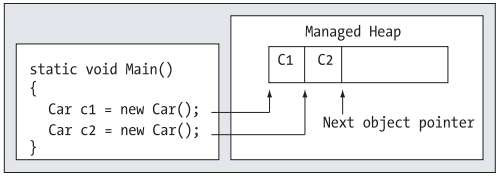
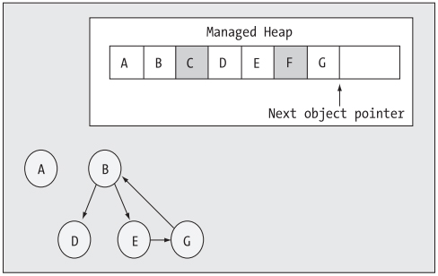
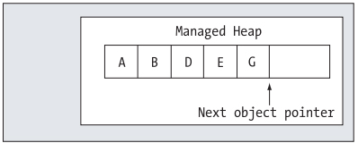

Chapter 5 - Understanding Object Lifetime
Content
The point of this chapter is to understand how the CLR is managing allocated objects via garbage collection.
C# programmers never directly deallocate a managed object from memory. Rather, .NET objects are allocated onto a region of memory termed the managed heap,
where they will be automatically destroyed by the garbage collector at "some time in the future".
Once you have examined the core details of the collection process, you will learn how to programmatically interact with the garbage collector using
the System.GC class type. Next you examine how the virtual System.Object.Finalize() method and IDisposable interface can be used to build types that
release internal unmanaged resources in a timely manner.
The basics of Object Lifetime
The golden rule of .NET memory management is simple:
- Rule: Allocate an object onto the managed heap using the new keyword and forget about it.
Once "new-ed", the garbage collector will destroy the object when it is no longer needed. But how does the garbage collector determine
when an object is no longer needed? The short answer is that the garbage collector removes an object from the heap when it is unreachable by any part of your code base.
However, you cannot guarantee that this object will be reclaimed from memory immediately it has been unreachable. All you can assume at this point is that the CLR performs
the next garbage collection, this object could be safely destroyed.
Programming in a garbage collected environment will greatly simplify your application development. By allowing the garbage collector to be in charge of destroying objects,
the burden of memory management has been taken from your shoulders and placed onto those of the CLR.
The CIL of new
When the C# compiler encounters the new keyword, it will emit a CIL newobj instruction into the method implementation.
Understand that the managed heap is more than just a random chunk of memory accessed by the CLR. The .NET garbage collector
is quite a tidy housekeeper of the heap, given that it will compact empty blocks of memory (when necessary) for purposes of optimization.
To aid in this endeavor, the managed heap maintains a pointer (commonly refered to as the next object pointer or new object pointer) that
identifies exactly the next object will be located. The below figure illustrates details of allocating objects onto the managed heap.

As you are busy allocating objects in your application, the space on the managed heap may eventually become full.
When processing the newobj instruction, if the CLR determines that the managed heap does not have sufficient memory to allocate the requested type,
it will perform a garbage collection in an attempt to free up memory. Thus, the next rule of garbage collection is also quite simple.
- Rule: If the managed heap does not have sufficient memory to allocate a requested object, a garbage collection will occur.
The role of Application roots
To understand how the garbage collector determines when an object is "no longer needed", you need to be aware of the notion of application root.
A root is a storage location containing a reference to an object on the heap. Strictly speaking,
a root can fall into any of the following categories:
- References to global objects (while not allowed in C#, CIL code does permit allocation of global objects)
- References to currently used static objects/static fields
- References to local objects within a given method
- References to object parameters passed into a method
- References to objects waiting to be finalized
- Any CPU register that references a local object
During a garbage collection process, the runtime will investigate objects on the managed heap to determine if they are still reachable (aka rooted) by the application.
To do so, the CLR will build an object graph, which represents each reachable object on the heap. As well, be aware that the garbage collector will never graph the same object twice.
Assume that the managed heap contains a set of objects named A, B, C, D, E, F and G. During garbage collection, these objects are examined for active roots.
Once the graph has been constructed, unreachable objects (which we will assume are objects C and F) are marked as garbage. The below diagrams a possible object graph for the scenario just described.

Once object has been marked for termination, they are swept from memory. At this point, the remaining space on the heap is compacted, which in turn will cause the CLR to modify the set of active application roots
to refer to the correct memory location (this is done automatically and transparently). Last but not least, the next object pointer is readjusted to point to the next available slot.

Understanding Object Generations
Read at page 184 of textbook.
The System.GC type
The base class libraries provide a class type named System.GC that allows you to programmatically interact with the garbage collector using a set of static members.
However, the only time you will make use of the members of System.GC is when you are creating types that make use of unmanaged resources.
Read some of more intersting members at page 185 of textbook.
Forcing a Garbage Collection
Again, the whole purpose of the .NET garbage collector is to manage memory on our behalf. However, under some very rare circumstances, it may be benificial to programmatically
force a garbage collection using GC.Collect(). Specifically:
- Your application is about to enter into a block of code that you do not wish to be interrupted by a possible garbage collection.
- Your application has just finished allocating an extremely large number of objects and you wish to remove as much of the acquired memory as possible.
When you manually force a garbage collection, you should always make a call to GC.WaitForPendingFinalizers(). With this approach, you can rest assured that
all finalizable objects have had a chance to perform any necessary cleanup before your program continues forward. Under the hood, this method will suspend
the calling "thread" during the collection process. It ensures that your code does not invoke methods on an object currently being destroyed!
Building Finalizable objects
When you override Finalize() method of System.Object, you establish a specific location to perform any necessary cleanup logic for your type.
Given that this member is defined as protected, it is not possible to directly call an object's Finalize() method. Rather, the garbage collector will call
an object's Finalize() method before removing the object from memory.
The only time you would need to design a class that can clean up after itself is when you are making use of unmanaged resources
(such a raw OS file handles, raw unmanaged database connections, or other unmanaged resources). Unmanaged resources are obtained by directly calling into the API of
the operating system using PInvoke (platform invocation) services or due to some very elaborate COM interoperability scenarios.
Given this, consider the next rule of garbage collection:
- Rule: The only reason to override Finalize() is if your C# class is making use of unmanaged resources via PInvoke or complex COM interoperability tasks.
Detailing the finalization process
When you allocate an object onto the managed heap, the runtime automatically determines whether your object supports a custom Finalize() method.
If so, the object is marked as finalizable, and a pointer to this object is stored on an internal queue named the finalization queue.
The finalization queue is a table maintained by the garbage collector that points to each and every object that must be finalized before it is removed from the heap.
When the garbage collector determines it is time to free an object from memory, it examines each entry on the finalization queue, and copies the object off
the heap to yet another managed structure termed the finalization reachable table. At this point, a seperate thread is spawned to invoke the Finalize() method for each object
on the freachable (abbreviation of finalization reachable) table at the next garbage collection. Given this, it will take at very last two garbage collections
to truly finalize an object.
Building Disposable objects
As an alternative to overriding Finalize(), your class could implement the IDisposable interface, which defines a single method named Dispose().
When you do support the IDisposable interface, the assumption is that when the object user is finished using the object, it manually calls Dispose()
before allowing the object reference to drop out of scope. In this way, your objects can perform any necessary cleanup unmanaged resources without incurring
the hit of being placed on the finalization queue and without waiting for the garbage collector to trigger the class's finalization logic.
Note that a Dispose() method is not only responsible for releasing the type's unmanaged resources, but should also call Dispose() on any other contained dissposable methods.
Unlike Finalize(), it is perfectly safe to communicate with other managed objects within a Dispose() method.
The reason is simple: The garbage collector has no clue about the IDisposable interface and will never call Dispose(). Therefore, when the object user calls this method,
the object is still living a productive life on the managed heap and has access to all other heap-allocated objects.
- Rule: Always call Dispose() on any object you directly create if the object supports IDisposable.
The assumption you should make is that if the class designer chose to support the Dispose() method, the type has some cleanup to perform.
Building Finalizable and Disposable types
It is possible to blend both techniques: overriding System.Object.Finalize() method and implementing IDisposable interface into a single class definition.
If the object user does remember to call Dispose(), you can inform the garbage collector to by pass the finalization process by calling GC.SuppressFinalize().
If the object user forgets to call Dispose(), the object will eventually be finalized. The good news is that the object's internal unmanaged resources
will be freed one way or another.
Summary
The point of this chapter was to demystify the garbage collection process. The garbage collector will only run when it is unable to acquire the necessary memory from the managed heap.
When a collection does occur, you can rest assured that Microsoft's collection algorithm as been optimized by the use of object generations,
secondary threads for the purpose of object finalization, and a managed heap dedicated to host large objects.
This chapter also illstrated how to programmatically interact with the garbage collector using the System.GC class type. As mentioned, the only time when you will really need to do so is
when you are building finalizable or disposable class types. Using this technique, you expose a public method to the object user that can be called to perform internal cleanup ASAP.